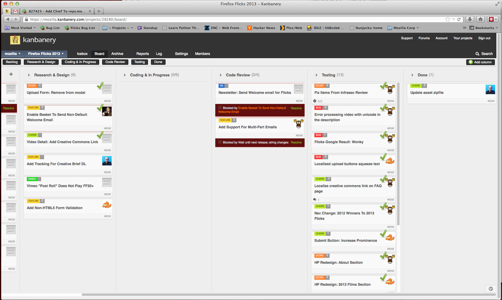
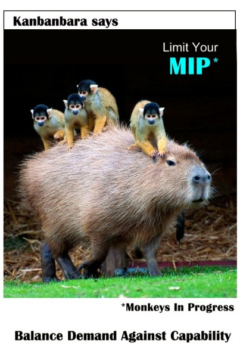
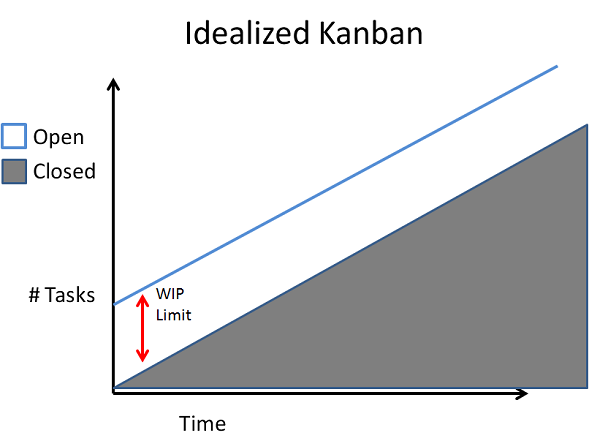
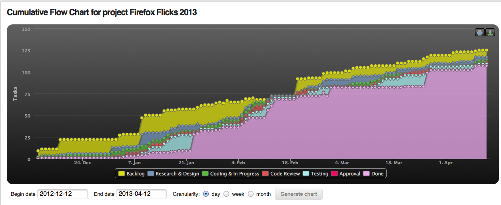
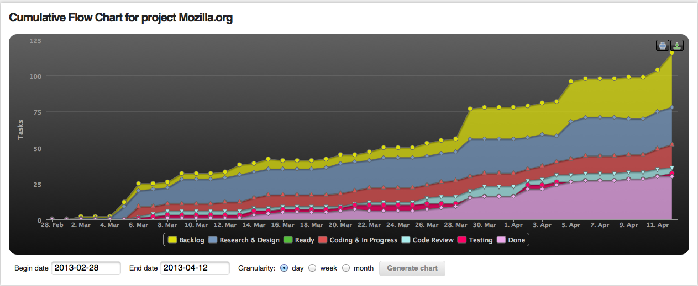
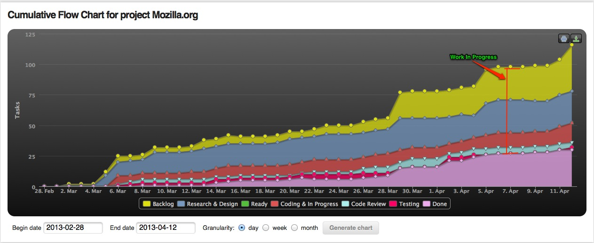
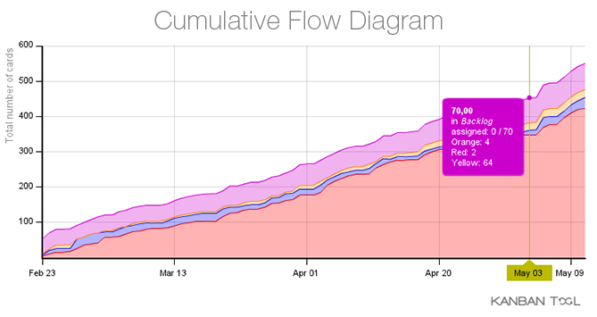
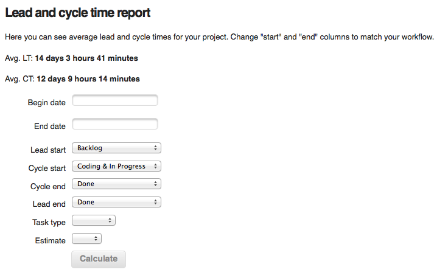

Kanban Metrics
A brief introduction...
What we will cover:
- Metrics & Kanban
- Visually Identifying Bottlenecks
- Cumulative Flow Chart: Overall Project Health
- Performance Indicators
- Lead Time
- Cycle Time
How we arrived at Kanban?
May 21, 2012
10:03 dev: manager: pong
10:03 manager: dev: http://foo.mozilla.org needs somewhat urgent design refresh.
10:03 dev: sounds great
...
10:04 dev: manager: are you suggesting I do this?
10:04 manager: if you have the availability
10:04 dev: there has to be a better way of assigning work than "whoever is on IRC"
KANBAN 101
- Visualize Workflow
- Limit WIP
- Measure & Improve
Kaizen 改善
Change For The Better
Metrics & Data
Visual Data
The Board Can Tell You A Lot
L10N Bottleneck
Most Important Metric If Things Are Kosher?
Monkeys In Progress
Work In Progress
Measuring Work In Progress
Cumulative Flow Charts Are Your Friend
If the system is flowing correctly the bands on the chart should be smooth and their height should be stable.
Measuring Work In Progress
Large steps and flat horizontal lines indicate impediments to flow or lack of flow. Variations in the gap or bands stand for bottleneck situations, which usually occur due to irrelevant work in progress limits. This means that the number of tasks in each column should remain at the same level over the time. In addition, too many tasks in the queue mean either problems with finishing work on time or that the employee on the next stage cannot deal with work.
TL;DR -> Should Look Like This
Oh shit
Or not. Depends on the project.
Different Project, Different Chart
Long term project, cont. deployment.
TOTAL WIP
they can also show blockers and other problems
Projects in transition. Stakeholder issues. Lack of resources.

Eventually We Want
We get here by continously making small changes and measuring their impact.
Performance Indicators
- Lead Time
- Cycle Time
Lead Time
The clock starts when the request is made and ends when it is done.
Cycle Time
For us, the clock starts when dev starts and ends when it is done.
Why So Important?
They Should Be As Low As Possible
It represents costs & benefits.
How To Measure
Use the flow chart or generate a report.
How To Implement Change?
- Start with a goal.
- Find a metric / tehcnique to measure that goal.
- Measure before and after.
Additional Tips When Making Changes
- Make sure the board is accurate.
- Keep a log of when changes occur.
- Analyze the Cumulative Flow Chart.
- Use this to inform WIP limits.